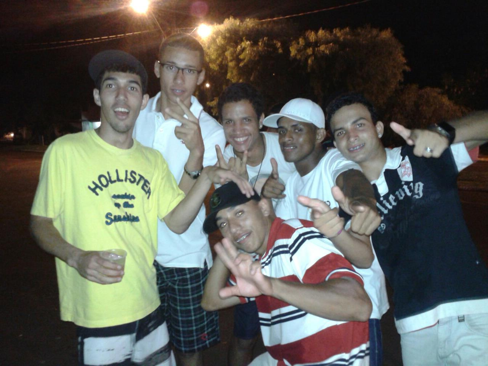
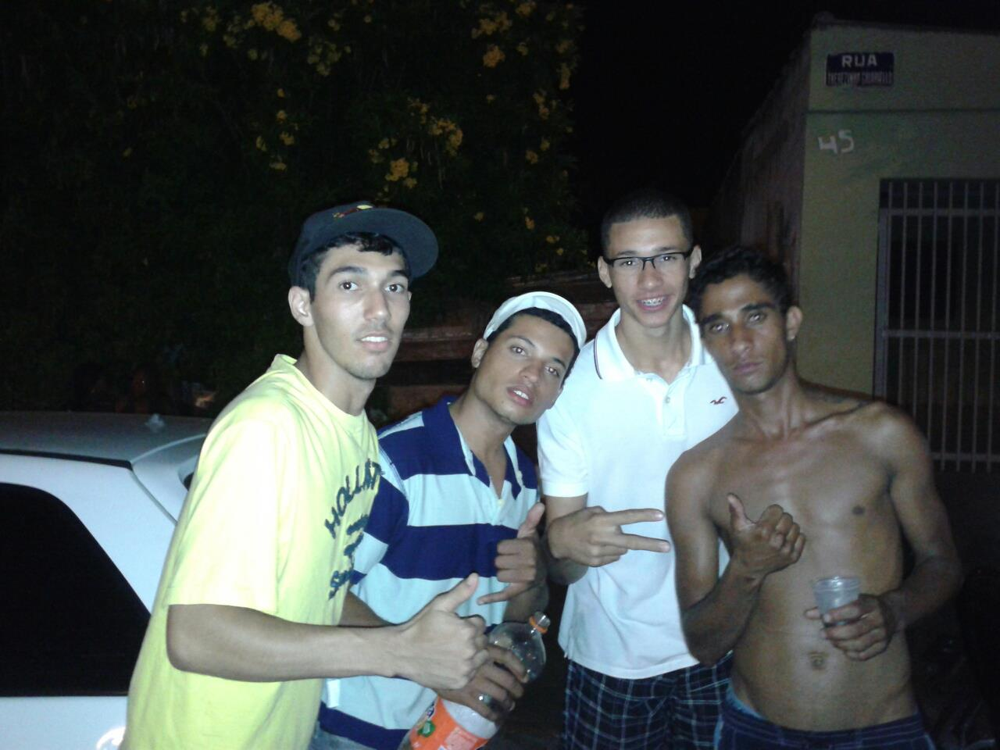

Crescemos juntos. Rimos até doer a barriga. Vivemos dias em que o mundo parecia pequeno demais para nossos sonhos. O tempo passou… alguns seguiram outros caminhos, alguns formaram famílias, e hoje todos ainda moram na mesma cidade — apenas em bairros mais distantes. Mesmo assim, aquilo que vivemos juntos nunca se perdeu.

Aquela foto cheia de sorrisos não é só uma imagem — é um pedaço da nossa história. Ela guarda uma época em que tudo era simples: amizade, conversa fiada, zoeira, planos e esperança.

E entre nós havia um amigo especial… daqueles que marcam a vida da gente. Hoje ele mora com Deus. Partiu cedo, numa estrada que não era para terminar ali. Mas sua presença ainda vive em cada lembrança.
A saudade dói, mas também aquece. Porque quem foi verdadeiro nunca vai embora de verdade.
Para sempre, irmãos. Para sempre, amigos. 🤍